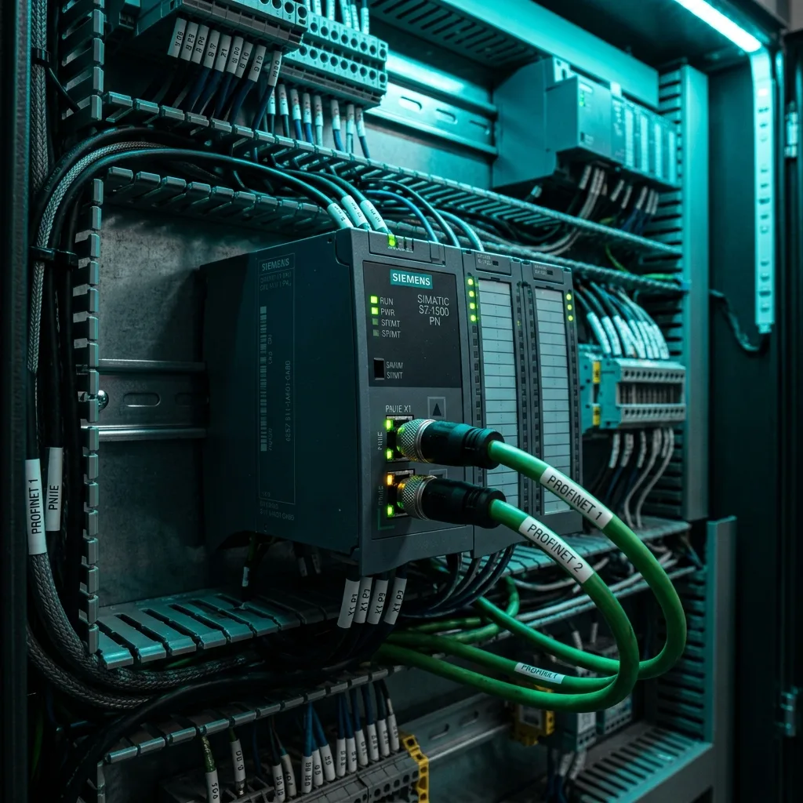

PLC Siemens: La Guía Definitiva de Modelos, TIA Portal y Aplicaciones en la Industria

Si caminas por cualquier planta del clúster automotriz y manufacturero en Saltillo, Ramos Arizpe, Monclova o Torreón, es casi seguro que te encuentres con un gabinete pintado de gris con el distintivo logo de Siemens. El término PLC Siemens es la búsqueda número 1 sobre automatización en todo el estado de Coahuila, y no es para menos: estos controladores son el estándar europeo y global para gestionar procesos automatizados.
En este artículo explicaremos en lenguaje sencillo, pero técnico y detallado, qué hace tan especial al PLC Siemens, cuáles son sus principales familias de productos y cómo se aplican en la vida real.
💡 Ejemplo sencillo para entender un PLC Siemens:
Imagina un embotellador de refrescos o bebidas en Ramos Arizpe. Una botella vacía avanza por una banda transportadora. Un sensor óptico (entrada) detecta la botella y le avisa al PLC Siemens. El PLC cuenta medio segundo, activa una electroválvula (salida) para llenar el envase exacto durante 2 segundos, detiene el flujo y luego enciende el motor que lleva la botella al taponador. Todo esto sucede miles de veces por hora con precisión de milisegundos gracias al cerebro del PLC Siemens.
Principales Familias de PLC Siemens en el Mercado
Siemens ofrece diferentes gamas de PLC adaptadas al tamaño y la complejidad de cada máquina:
1. LOGO! (Microcontrolador Inteligente)
Es el "hermano menor" de la familia. Es un módulo compacto con pantalla integrada ideal para proyectos pequeños, como el control de alumbrado de una nave industrial, portones automáticos, o el bombeo de agua en una cisterna.
2. SIMATIC S7-1200 (Gama Compacta Estándar)
El caballo de batalla para máquinas independientes y celdas de tamaño mediano. Cuenta con puertos de red Profinet integrados y entradas/salidas analógicas para medir temperatura o presión.
Ejemplo de uso: Una máquina empacadora de partes automotrices en Saltillo que sella cajas de cartón y aplica etiquetas de código de barras.
3. SIMATIC S7-1500 (Gama Alta de Máximo Rendimiento)
Es el rey indiscutible de las líneas de producción automotriz de alta velocidad. Posee un procesador ultra rápido, pantalla de diagnóstico integrada en el propio PLC y capacidad de gestionar cientos de servomotores coordinados en tiempo real mediante redes Profinet IRT.
Ejemplo de uso: Una línea completa de soldadura robotizada donde 6 robots FANUC y 20 prensas hidráulicas trabajan sincronizadas segundo a segundo.
¿Qué es TIA Portal (Totally Integrated Automation)?
El hardware del PLC Siemens no funciona solo; requiere un software para programarlo. Ese software es TIA Portal (versiones v17, v18, v19). TIA Portal es un entorno único donde el ingeniero de automatización puede programar:
- El PLC (Lógica de control): En lenguajes de diagrama de escalera (LAD), bloques de funciones (FBD) o texto estructurado (SCL).
- La Pantalla HMI (Interfaz Hombre-Máquina): El diseño de los botones táctiles y gráficas que ven los operadores en la planta.
- Los Variadores de Frecuencia (VFD): El control de velocidad de los motores eléctricos.
⚡ ¿Necesitas Programación o Capacitación en PLC Siemens en Saltillo?
En Robologix Automation desarrollamos proyectos llave en mano, diagnóstico de fallas en planta 24/7 y Cursos Prácticos de PLC Siemens TIA Portal en Saltillo y Ramos Arizpe con constancia oficial DC-3 STPS.
Resumen: ¿Por qué capacitarse o implementar PLC Siemens en Coahuila?
Contar con personal técnico capacitado en PLC Siemens garantiza resolver paros de línea en minutos en lugar de horas. La demanda de programadores Siemens en la región sureste de Coahuila sigue creciendo aceleradamente debido al boom del nearshoring y la electrificación automotriz.
¿Tienes un proyecto o requieres soporte en PLC Siemens?
Habla directamente con nuestros ingenieros especialistas en Saltillo.
WhatsApp Directo (+52 844 455 1869)